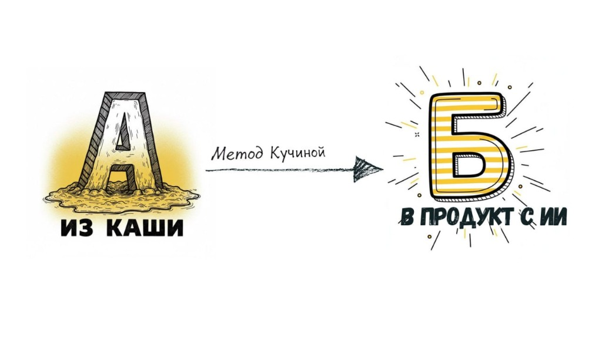
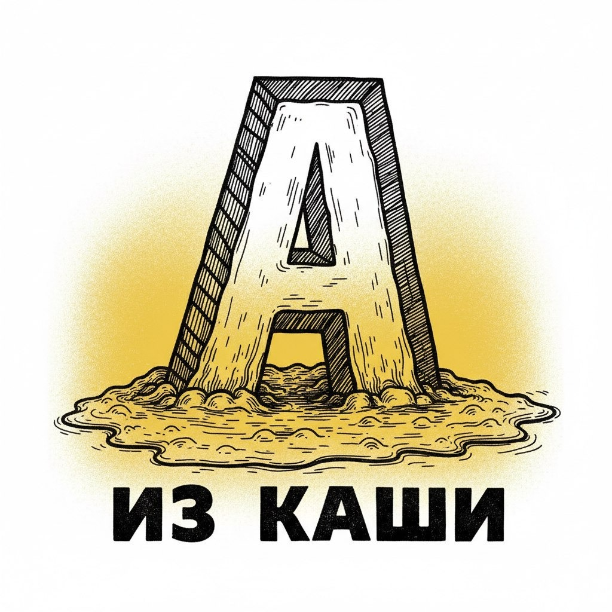
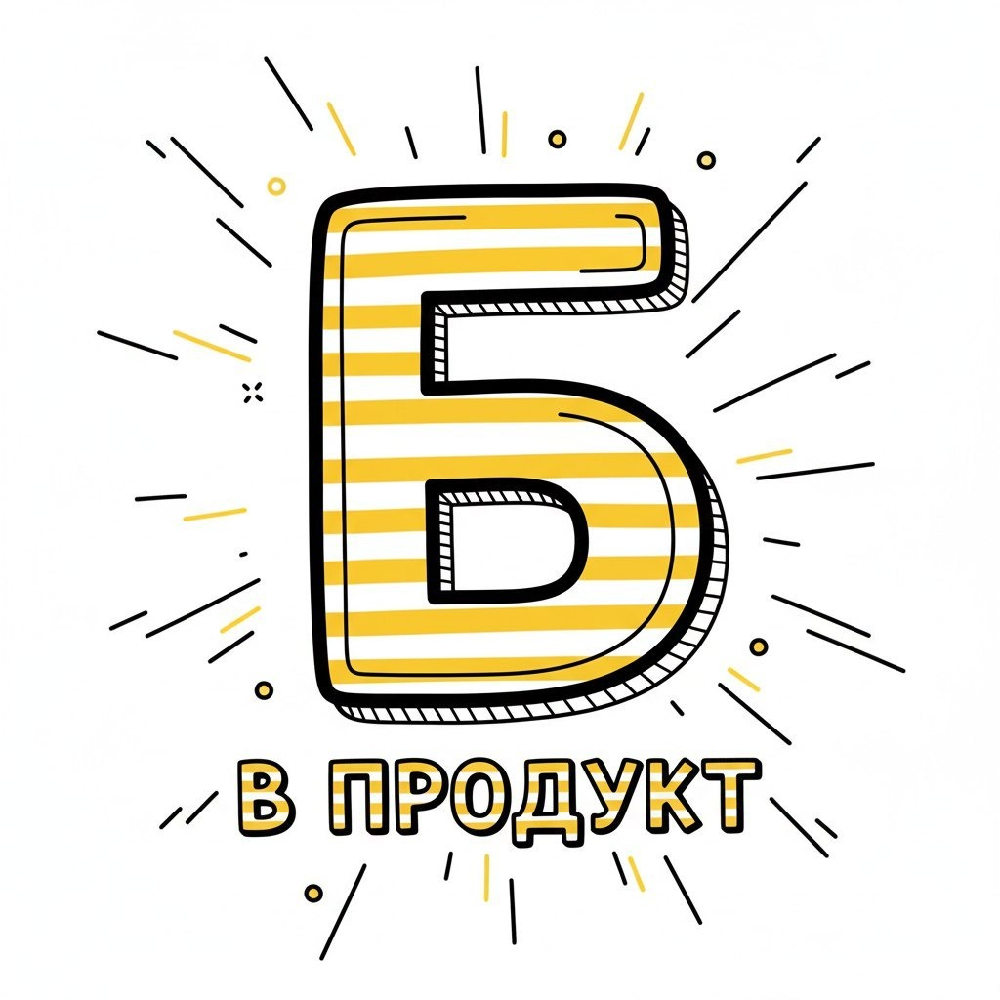

Из каши в голове —
в понятный продукт и блог, который наконец-то продаёт
Для экспертов и специалистов, у которых уже была тысяча распаковок, много опыта и направлений, но до сих пор нет одной ясной системы: кто я, что продаю и как про это говорить, чтобы люди покупали, а не просто восхищались.
Если вы устали быть «человеком с потенциалом» или «хорошими руками на подхвате» и хотите, чтобы ваш опыт сложился в конкретный продукт, линейку и живой блог — здесь как раз про это.
Дочитай до конца
Не ещё одна перераспаковка, а сборка системы из того, что уже есть, с ИИ.


У вас уже были распаковки, разборы, тесты, но всё равно нет понятного продукта и блога, который продаёт
У вас за плечами уже курсы, распаковки, тесты, разборы. Про себя вы знаете больше, чем средний человек, но на простой вопрос «что ты делаешь и что можно у тебя купить?» по‑прежнему хочется отвечать долго и путано.
В голове — несколько направлений, ролей и форматов: и консультации, и терапия, и запуск, и разборы. Кажется, что если что‑то убрать, вы «урежете себя», поэтому тянете всё сразу и устаете.
Блог живёт рывками: то вы пишете вдохновлённо, то выпадаете на месяцы, потому что не понимаете, к чему вести людей и какой продукт за этим стоит.
Продукты рождаются «сверху»: придумали новый курс/марафон, запустили, что‑то продали, но внутри нет ощущения, что это ваша устойчивая опора, и хочется всё переделать.
Деньги завязаны на часах и чужих задачах: вы или разрываетесь в проектах как исполнитель, или проводите сессии без чёткого пути для клиента, и от этого нет ни предсказуемости, ни внутреннего удовлетворения.
Метод
«Из каши в продукт с ИИ»
«Из каши в продукт с ИИ» — это дорожная карта для тех, у кого уже есть опыт, распаковки и понимание себя, но нет одного понятного продукта и живой системы вокруг него. Метод по шагам переводит ваши знания о себе в конкретные формулировки: кто вы, кому вы полезны, какие продукты из вас логично вытекают и как блог это поддерживает. ИИ здесь не про магию, а про аккуратный рабочий станок, который помогает быстрее структурировать, собирать и проверять ваши идеи.
- Не очередная «перераспаковка личности», а фокус на сборке продуктовой линейки и связки продукт–блог.
- Упор не на «поиск предназначения», а на инженерную логику: хочу + умею + нужно людям + выдерживаю по ресурсу.
- ИИ используется как инструмент для структурирования и формулировок, а не как автор вместо вас.
- На выходе — не только инсайты, а конкретные опоры: позиция, продукты, сегменты ЦА и язык, на котором с ними говорить.

Б" class="method-img">Как мы идём из точки А в точку Б
Собираем все ингредиенты
Аккуратно вытаскиваем всё, что у вас уже есть: опыт, роли, навыки, ценности, вашу «рабочую механику» и зоны интереса. Используем тест Шварца, Human Design, Икигай и ИИ, чтобы разложить это в понятные блоки, а не держать в голове.
Собираем основу и линейку
На основе этой базы формируем позицию («кто вы и за что отвечаете»), 3–5 логичных продуктов и простую лестницу, по которой вы ведёте клиента от первого шага к глубокой работе.
Понимаем людей
Определяем 2–3 живых сегмента ЦА, выбираем основной для старта, переводим всё в язык клиента: его боли, желания, страхи, точку А и Б, собираем первый оффер.
Привязываем к блогу и продажам
Решаем, о чём говорить в блоге, чтобы это поддерживало вашу систему: какие темы, истории и форматы подводят людей к продуктам без насилия и плясок вокруг запуска.


Формат и что будет на руках
Формат
- Онлайн-мини-группа, где вы идёте по одному маршруту, но каждый собирает свой продукт и систему под себя.
- 1 общий созвон в неделю + короткие прикладные задания, которые можно встроить в рабочий график, без учебной каторги.
- 1 индивидуальная встреча, где мы собираем именно вашу картину: убираем лишнее, заземляем решения и фиксируем опоры.
- ИИ встроен в процесс: вы получаете готовые промпты и шаблоны, которые помогают быстро структурировать ответы, а не сидеть часами над чистым листом.
Результаты на руках
- Чёткая формулировка «кто вы как эксперт» и «с чем выходите к людям» в нескольких рабочих вариантах.
- Собранная продуктовая основа: 3–5 форматов, логично вытекающих из вас, с примерной лестницей движения клиента.
- Карта вашей аудитории: 2–3 сегмента, выбранный основной, их боли, желания, страхи и язык, на котором они говорят.
- Черновик оффера и первые формулировки под лендинг/продажный пост.
- Набор тем и углов для блога, которые поддерживают вашу систему, а не живут отдельно от продукта.
Кто ведёт
из каши в продукт
По сути я методолог и навигатор, который сам прошёл через долгие годы расфокуса, офлайн-бизнес, найм, игры, нейросети и кучу обучений, а потом собрал из этого один вектор — «Из каши в продукт с ИИ».
Я много лет была тем самым человеком, у которого «много всего есть», от сети магазинов офлайн до продюсирования онлайн-школ, монтажа и консультаций, но не было одной понятной системы, кто я и как это нормально продавать.
Этот метод родился из моего собственного распыления, из работы с ИИ, из десятков разборов и экспресс-сессий, где люди уходили со словами «всё, пошёл делать» и возвращались с результатами.
Я не про «ещё одну распаковку личности ради инсайтов» и не про упаковку «под ключ», где за вас всё решают.
Моя зона силы — навести порядок, собрать в структуру, объяснить простым человеческим языком и дать рабочий маршрут, чтобы вы остались автономными и спокойными, а не зависели от меня или очередного продюсера.
Я работаю бережно, без давления и цирка с дедлайнами: мы смотрим на ваши реальные факты, ценности, механику, интересы и спрос, опираемся на логику, на живого человека и используем ИИ как аккуратный станок, чтобы быстрее собрать из вашей «каши» понятный продукт и систему вокруг него.
Вам сюда, если…
- У вас уже есть опыт, навыки, много пройденных курсов и распаковок, но до сих пор нет одного понятного продукта и внятной системы вокруг него.
- Вы чувствуете, что переросли роль «просто исполнителя» или «человека с потенциалом» и хотите собрать из себя ясного эксперта с продуктовой основой и нормальным блогом.
- Вы застряли на старте: всё про себя выписали, идеи есть, но так и не начали стабильно продавать, потому что не понимаете, с чем именно выходить к людям и как это назвать.
- Вы готовы думать, принимать решения, отказываться от лишнего и работать вместе с ИИ как с инструментом, а не ждать чужой волшебной упаковки «под ключ».
Не подойдёт, если…
- Вы совсем в нуле: нет опыта, навыков и реальной работы с людьми, которую можно упаковать в продукт.
- Вы ждёте, что ИИ и метод сами за вас всё решат: выберут нишу, соберут продукт и настроят продажи, а вам останется только кликнуть «сделать красиво», без вашего участия и решений.
- Вы не готовы смотреть на свои решения трезво, резать лишнее и выбирать фокус, предпочитая бесконечно «искать себя» в новых распаковках и тестах.
Первый шаг — экспресс-разбор
«Точка выхода на новый уровень»
Если ты читаешь это и чувствуешь, что у тебя как раз «много всего есть, а одного вектора нет» — первым шагом можно прийти на экспресс-разбор «Точка выхода на новый уровень».
Это короткий разгон-разбор по авторскому методу: за 10–15 минут мы смотрим, что у тебя реально на первом месте сейчас, где ты буксуешь, что у тебя уже в избытке (но ты не воспринимаешь это как ценность) и куда ты вообще не смотришь, хотя там выход на следующий уровень.
Это не тест, не психотерапия и не часовой допрос с самокопанием.
Мы быстро собираем картину, и по итогам становится понятно, есть ли смысл заходить в метод «Из каши в продукт с ИИ» именно тебе или тебе пока достаточно этого толчка, чтобы двигаться дальше самостоятельно. Я правда не беру всех подряд: если вижу, что сейчас не время или задача другая, честно скажу об этом и не буду продавать продолжение.
Если хочешь на такой разбор, оставь заявку через форму или нажми кнопку «Хочу на экспресс-разбор» — я свяжусь с тобой в рабочее время и предложу ближайшие слоты по будням с 9 до 17 МСК.